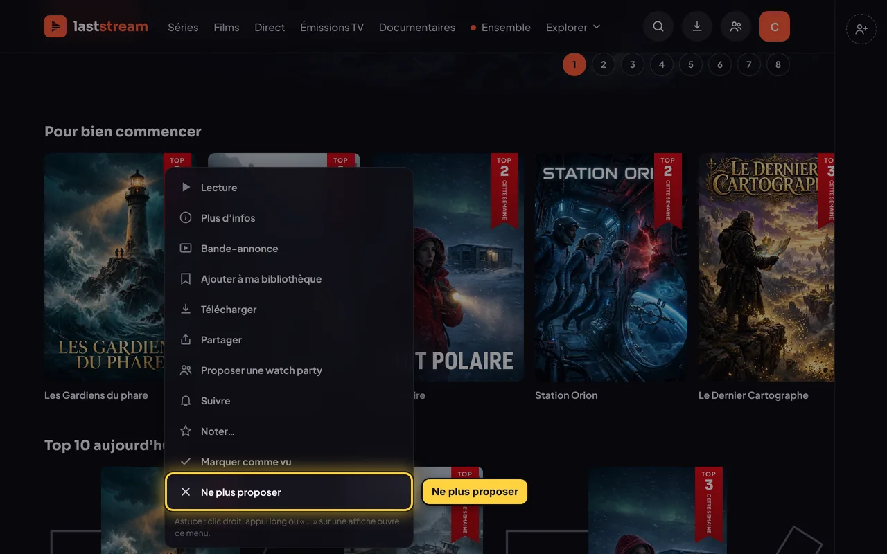
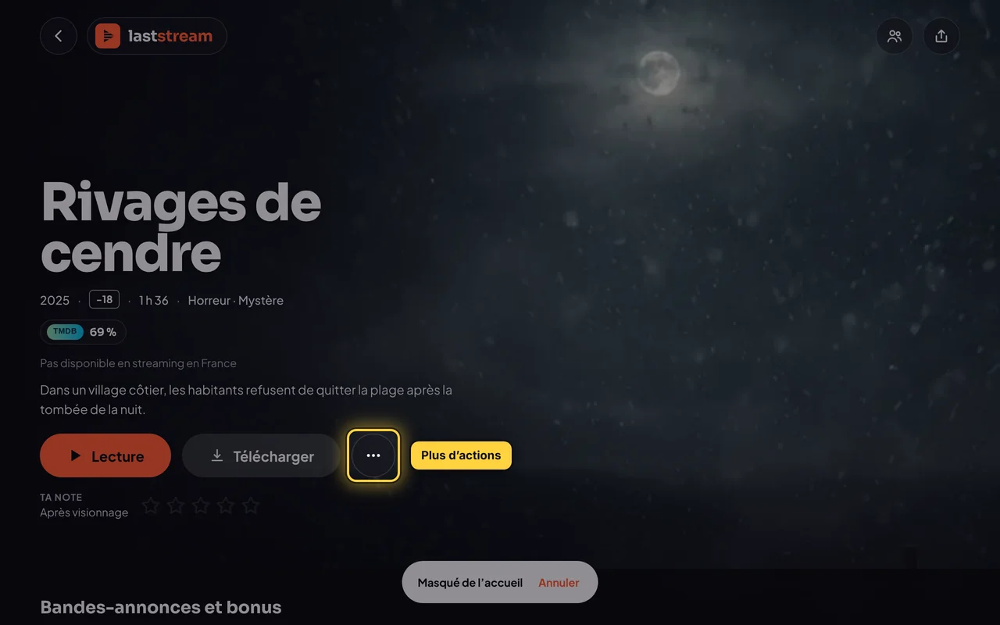
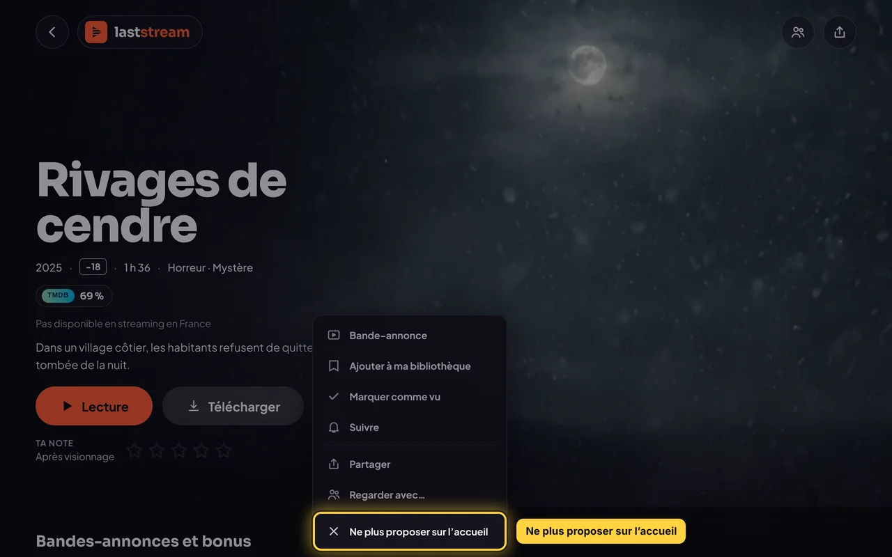
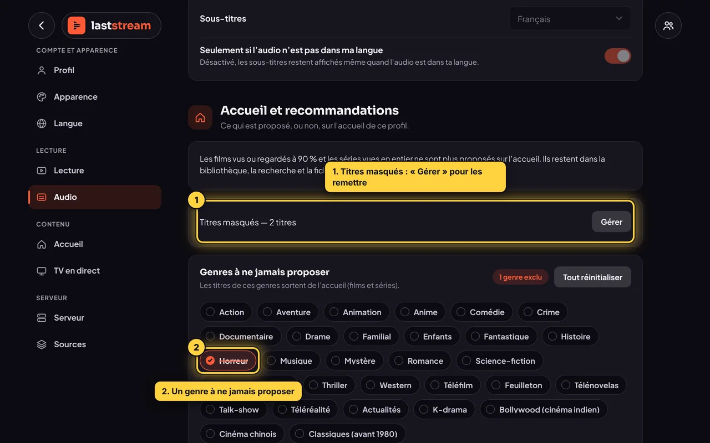

Étapes
Sur chaque capture, le cadre jaune montre où toucher ou cliquer ; les numéros donnent l’ordre.
-
Sur l’accueil, touche le « … » d’une affiche (ou clic droit, ou appui long), puis « Ne plus proposer ».

-
Depuis la fiche d’un titre, c’est le bouton « … » à côté de Lecture…

-
…puis « Ne plus proposer sur l’accueil ».

-
Dans les « Réglages », catégorie « Accueil » : « Titres masqués » (1) compte les titres retirés, et « Gérer » permet de les remettre.
Sous « Genres à ne jamais proposer », touche un genre (2) pour sortir tous ses titres de l’accueil. « Tout réinitialiser » les remet tous.
